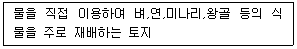
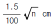
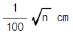
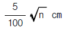
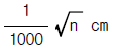
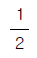
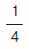
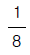
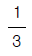

지적기능사 (2001-10-14 기출문제)
1과목: 지적일반(임의구분)
1. 다음 중 지적제도의 유형에 속하지 않는 것은?
- 행정 지적
- 세 지적
- 다목적 지적
- 법 지적
(정답률: 83%)

2. 우리나라에서 채용하고 있는 경계주의는?
- 지상경계주의
- 도상경계주의
- 자연경계주의
- 인공경계주의
(정답률: 74%)
3. 다음에서 설명하는 내용이 의미하는 지목은?

- 전
- 답
- 대
- 유지
(정답률: 30%)
4. 다음 중 다목적 지적의 구성요소가 아닌 것은?
- 측지기본망
- 지적도
- 토지성분
- 고유식별번호
(정답률: 57%)
5. 우리나라 임야도의 축척은 모두 몇 종인가?
- 2종
- 3종
- 4종
- 5종
(정답률: 100%)
6. 다음 중 지적공부에 해당하는 것은?
- 가옥대장
- 도로대장
- 임야대장
- 하천대장
(정답률: 89%)
7. 묘지를 관리하기 위한 건축물 부지의 지목은 원칙적으로 어느 것인가?
- 대
- 묘지
- 분묘지
- 임야
(정답률: 53%)
8. 우리나라 토지를 지적공부에 등록하는 기본 원칙으로 볼 수 없는 것은?
- 실질적 심사주의
- 형식적 심사주의
- 직권등록주의
- 국정주의
(정답률: 40%)
9. 토지대장에 등록하는 내용으로 틀린 것은?
- 토지의 소재, 지번
- 토지의 지목
- 지상권자의 주소, 성명
- 토지의 면적
(정답률: 52%)
10. 고추를 재배하는 토지의 지목은?
- 임야
- 잡종지
- 채소밭
- 전
(정답률: 65%)
11. 전파기 또는 광파기 측량법에 의한 지적 삼각점 관측시 측거기 표준편차의 제한은?
- ±(3mm + 3ppm)
- ±(5mm + 5ppm)
- ±(10mm + 10ppm)
- ±(15mm + 15ppm)
(정답률: 61%)
12. 다음 중 지적측량이 아닌 것은?
- 경계복원 측량
- 지적현황 측량
- 분할검사 측량
- 삼각 측량
(정답률: 47%)
13. 3대회 관측시 초독의 위치가 아닌 것은?
- 0도
- 60도
- 120도
- 200도
(정답률: 67%)
14. 경위의 측량방법에 의한 지적 삼각점의 계산과 관측에서 틀린 것은?
- 관측은 10초독 이상의 정밀 경위의를 사용한다.
- 수평각은 2대회 배각관측법에 의한다.
- 1방향 수평각 측각공차는 30초 이내로 한다.
- 기지각과의 차는 ±40초 이내로 한다.
(정답률: 23%)
15. 앨리데이드(조준의)의 시준판에 새겨진 1눈금과 양 시준판 간격의 관계는?
- 50분의 1
- 70분의 1
- 100분의 1
- 1000분의 1
(정답률: 48%)
16. 측량준비도를 작성하려고 한다. 다음 중 기재하지 않아도 되는 것은?
- 지적측량 기준점 및 기타 측량의 기점이 될 만한 기지점
- 도곽선과 그 도곽선 수치
- 지적도 도곽선이 0.5밀리미터 이하의 신축이 있는 때에는 그 차이
- 측량대상 토지의 경계선, 지번, 지목
(정답률: 48%)
17. 경계를 복원하기 위하여 측량할 때 옳은 방법은?
- 삼각측량방법에 의한다.
- 도근측량방법에 의한다.
- 경계등록 당시의 등록사항이 정정된 후 측량한다.
- 교회법에 의한다.
(정답률: 44%)
18. 경위의측량방법에 의한 지적삼각점 관측과 계산에서 수평각 측정시 1측회의 폐색공차는?
- ±10초 이내
- ±20초 이내
- ±30초 이내
- ±40초 이내
(정답률: 49%)
19. 다음의 측판측량방법 중 교회법의 종류에 해당되지 않는 것은?
- 도선교회법
- 후방교회법
- 전방교회법
- 측방교회법
(정답률: 48%)
20. 측판측량법에 의한 세부측량을 도선법으로 하는 경우 도선의 변수는?
- 10변이하
- 20변이하
- 30변이하
- 40변이하
(정답률: 70%)
2과목: 지적측량(임의구분)
21. 측판측량을 교회법으로 실시할 때의 설명 중 타당하지 않은 것은?
- 전방 또는 측방교회법에 의한다.
- 3방향 또는 2방향의 교회에 의한다.
- 방향선의 길이는 도상 10센티미터 이하로 한다.
- 시오삼각형 내접원의 지름이 1밀리미터 이하일 때는 그 중심점을 취한다.
(정답률: 48%)
22. 삼각형의 세변의 길이가 각각 6cm, 8cm, 10cm 일 때 이 삼각형의 면적은?
- 12cm2
- 24cm2
- 36cm2
- 48cm2
(정답률: 75%)
23. 일반적인 측판설치의 작업 순서로 옳은 것은?
- 정준, 구심, 표정
- 정준, 표정, 구심
- 구심, 정준, 표정
- 표정, 구심, 정준
(정답률: 48%)
24. 도근측량에서 1등도선의 연결오차 한계는? (단, n은 각측선 수평거리의 총합계를 100으로 나눈수)
- 당해지역 축척분모의

이하 - 당해지역 축척분모의

이하 - 당해지역 축척분모의

이하 - 당해지역 축척분모의

이하
(정답률: 69%)
25. 다음 중 지적측량에 해당하지 않는 것은?
- 등록된 토지의 분할측량
- 등록된 토지의 경계를 지상에 복원하는 측량
- 등록된 토지의 합병측량
- 대행자가 행한 측량을 검사하는 측량
(정답률: 45%)
26. 지적측량 방법으로 옳지 않은 것은?
- 측판측량
- 경위의 측량
- 수준측량
- 사진측량
(정답률: 36%)
27. 토지는 지적도와 임야도에 구분 등록되었다. 새로운 토지를 임야도에 등록할 때 옳은 것은?
- 지번 앞에 "산"자를 관기한다.
- 지번 위에 "산"자를 후기한다.
- 지번 앞에 "임"자를 관기한다.
- 지번 뒤에 "임"자를 후기한다.
(정답률: 63%)
28. 지적공부의 열람 또는 등본교부의 신청을 하는 경우 수수료의 납부 방법은?
- 수입인지로 소관청에 납부한다.
- 수입증지로 소관청에 납부한다.
- 현금으로 소관청에 납부한다.
- 현금이나 수입인지로 소관청에 납부한다.
(정답률: 53%)
29. 토지를 분할 할 때 경계는 어떻게 정하는가?
- 도상으로 결정
- 구적기에 의거 처리
- 삼각법에 의거 처리
- 측량하여 결정
(정답률: 52%)
30. 1필지의 일부가 지목이 다르게 된 때에는 다음 중 어떠한 신청을 먼저 하여야 하는가?
- 지목변경
- 축척변경
- 토지분할
- 등록전환
(정답률: 29%)
31. 지번을 부여함으로써 얻는 효과 중 가장 미미한 것은?
- 토지의 특정성을 살린다.
- 토지의 지리적 위치를 고정한다.
- 토지의 개별성을 보장한다.
- 토지의 가치를 결정한다.
(정답률: 64%)
32. 소관청이 토지 표시의 변경에 관한 등기를 관할 등기소에 촉탁할 필요가 없는 경우는?
- 지적도의 축척을 변경 하였을 때
- 행정구역 개편으로 새로이 지번을 정하였을 때
- 신청에 의한 신규등록 하였을 때
- 소관청의 직권에 의거하여 지목변경 하였을 때
(정답률: 39%)
33. 다음의 수수료 중 현금으로 징수하는 경우는?
- 지적도의 열람 수수료
- 지적공부 정리 수수료
- 지적도의 등본교부 수수료
- 지적측량 수수료
(정답률: 10%)
34. 정당한 사유없이 지적측량 업무집행을 방해한 자에 대한 벌칙규정으로 옳은 것은?
- 50만원 이하의 벌금
- 50만원 이하의 과태료
- 100만원 이하의 벌금
- 100만원 이하의 과태료
(정답률: 10%)
35. 소관청이 소유자의 주소등록에 대한 조사를 완료했을 때 공고해야 할 사항이 아닌 것은?
- 공고의 목적 및 기간
- 신청인 및 대리인의 성명, 주민등록번호, 주소
- 대장의 등록사항 및 신청 주소
- 기타 소관청이 필요하다고 인정되는 사항
(정답률: 50%)
36. 임야대장 등록지의 면적의 단위는?
- 제곱미터(m2)
- 정보
- 평
- 단보
(정답률: 95%)
37. 공유지연명부를 새로이 작성해야 할 1필지 소유자 수의 기준에 해당하는 것은?
- 1인 이상
- 2인 이상
- 3인 이상
- 4인 이상
(정답률: 83%)
38. 다음 중 색인도의 역할에 해당하는 것은?
- 리·동 총 도면 매수의 파악
- 인접도면의 연결순서
- 임야도와 지적도의 접합
- 인접 리·동과의 접합
(정답률: 6%)
39. 지적도상의 경계가 불분명할 경우 경계를 확인할 수 있는 자료는?
- 토지대장
- 면적측정부
- 측량결과도
- 접합도
(정답률: 67%)
40. 일람도에 등재해야 할 사항으로 옳은 것은?
- 토지의 경계, 지번, 지목
- 고유번호, 토지소재
- 도곽선, 도곽선수치, 색인도
- 도곽선 및 하천·도로 등 주요 지형·지물
(정답률: 19%)
3과목: 지적공부정리(임의구분)
41. 다음 중 지적공부 도면의 축척(縮尺)이 아닌 것은?
- 1/600
- 1/1000
- 1/2400
- 1/3600
(정답률: 74%)
42. 지적도 또는 임야도에서 합병지의 말소되는 경계선 정리 방법은?
- 검은색의 짧은 교차선으로 한다.
- 가능한 도면이 훼손되지 않도록 긁는다.
- 붉은색의 짧은 교차선으로 한다.
- 합병되는 필지 연결표시로서 정리한다.
(정답률: 65%)
43. 지적도 및 임야도상에 유원지를 등록할 때 다음 중 어느 부호로 표기해야 하는가?
- 유
- 원
- 유원
- 유지
(정답률: 60%)
44. 다음 중 지적공부의 부본정리에 필요한 관련자료가 아닌 것은?
- 지적공부 부본정리 통보서
- 토지대장부본
- 도면부본
- 측량성과도 사본
(정답률: 24%)
45. 등록전환할 토지가 있는 때에 토지소유자는 대통령이 정하는 바에 의하여 몇 일 이내에 소관청에 지목변경을 신청해야 하는가?
- 15일 이내
- 30일 이내
- 45일 이내
- 60일 이내
(정답률: 67%)
46. 측량성과도의 작성에 대한 설명으로 옳은 것은?
- 수치지적부는 경계점간 계산거리를 기재하지 않는다.
- 분할 측량성과도 작성시 분할선은 홍색 실선으로 작성한다.
- 분할 측량성과도 작성시 현황선은 흑색 실선으로 작성한다.
- 경계복원 측량성과도 작성시 복원된 경계점과 측량대상토지의 점유 현황선은 흑색으로 기재한다.
(정답률: 23%)
47. 면적을 측정할 경우 도곽선의 길이에 얼마 이상의 신축이 있을 때 이를 보정하는가?
- 0.5 mm
- 1 mm
- 2 mm
- 4 mm
(정답률: 60%)
48. 다음 중 지적도의 재작성과 관계 없는 것은?
- 측량결과를 기존 지적도에 등재할 수 없을 때
- 필지를 분할할 때
- 공부를 복구할 때
- 축척을 변경할 때
(정답률: 23%)
49. 다음 중 면적을 측정하지 않아도 되는 경우는?
- 토지를 2필지 이상으로 분할(分割)할 경우
- 지적공부에 토지를 새로이 등록할 경우
- 등록된 2필지 이상의 토지를 합병할 경우
- 토지의 경계를 정정할 경우
(정답률: 75%)
50. 축척이 1/500 인 지적도 1매의 면적은 축척이 1/1000 인지적도 1매 면적의 얼마에 해당하는가? (단, 도곽이 가로 40cm, 세로 30cm 이내 면적임)




(정답률: 37%)
51. 경위의측량방법에 의한 축척변경 시행지역의 측량에 사용하는 측량결과도의 축척은?
- 500분의 1
- 600분의 1
- 1000분의 1
- 1200분의 1
(정답률: 14%)
52. 다음 중 수치지적부상의 등재사항으로 옳은 것은?
- 토지소재, 지번, 좌표
- 토지소재, 지번, 지목
- 토지소재, 지번, 면적
- 토지소재, 지번, 경계
(정답률: 74%)
53. 축척 1/500과 1/600 에서 면적의 최소한계 값으로 볼 수 있는 것은?
- 0.5m2
- 0.⑤m2
- 0.0⑤m2
- 0.00⑤m2
(정답률: 40%)
54. 측판측량방법으로 세부측량을 하는 경우 지적도 시행지역에서의 거리 측정단위는?
- 1 cm 단위로 측정한다.
- 5 cm 단위로 측정한다.
- 10 cm 단위로 측정한다.
- 50 cm 단위로 측정한다.
(정답률: 15%)
55. 다음 중 도곽선의 용도로 옳지 않은 것은?
- 인접도면의 접합기준
- 지적측량 기준점 전개시의 기준
- 도곽 신축량을 측정하는 기준
- 경계를 결정하는 기준
(정답률: 44%)
56. 일람도 제도에서 붉은색 0.2mm 의 2선으로 제도하는 것은 다음 중 어느 용지인가?
- 수도용지
- 철도용지
- 공원용지
- 도로용지
(정답률: 86%)
57. 임야도 시행지역에서 극식푸라니미터로 면적을 측정할 경우 측윤 1분획의 단위면적은?
- 89.2 m2
- 90.2 m2
- 92.2 m2
- 99.2 m2
(정답률: 17%)
58. 지적도 작성에서 고딕체로 기재해야 하는 것은?
- 지적측량 기준점 명칭
- 축척
- 지목
- 지번
(정답률: 29%)
59. 다음 중 측판측량지역의 측량준비도 작성시 검은색으로 제도하여야 할 사항은?
- 보정계수
- 도곽선수치
- 도곽신축량
- 용도지역
(정답률: 50%)
60. 도곽선의 크기가 가로40cm ×세로30㎝ 일 때 횡선좌표가 193,777m 이었다. 좌도곽선과 우도곽선의 값은?
- 좌도곽선 193600m , 우도곽선 194000m
- 좌도곽선 193700m , 우도곽선 194100m
- 좌도곽선 193800m , 우도곽선 194200m
- 좌도곽선 193900m , 우도곽선 194300m
(정답률: 27%)